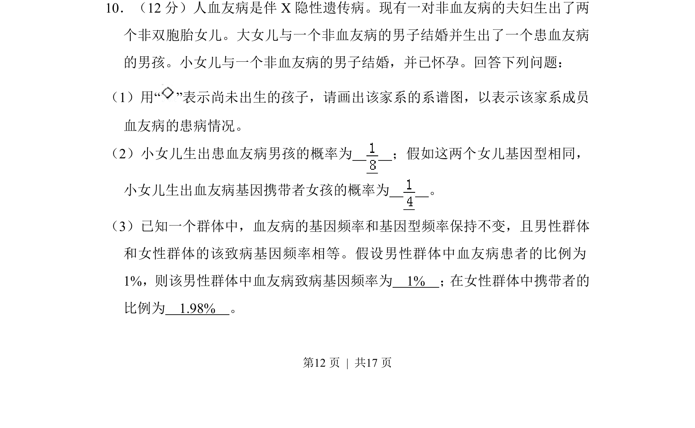
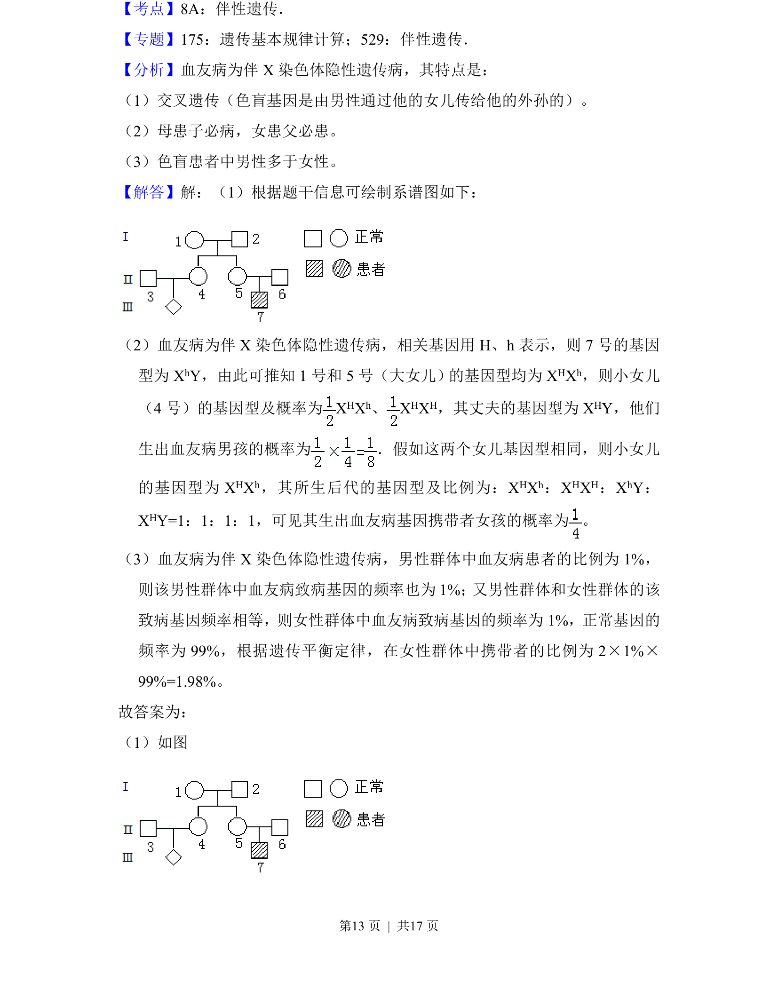
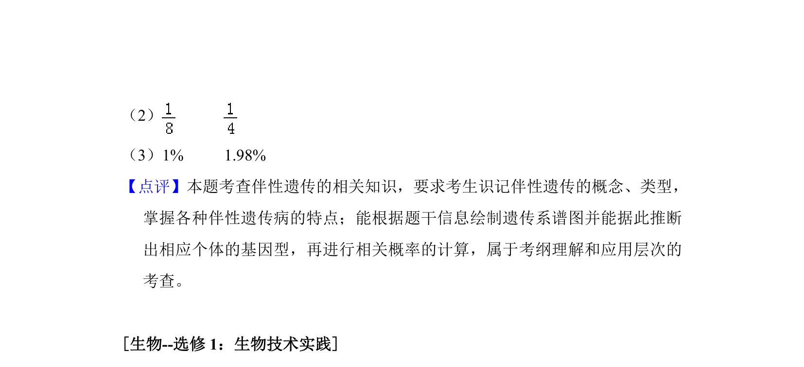

2017-新课标Ⅱ-10
考点：伴X隐性遗传 系谱图 基因频率 遗传概率
题面


摘要
该题通过血友病家系考查伴X隐性遗传的系谱图绘制、概率计算及群体基因频率与基因型频率的应用。
关联考点
答案与解析


📄 原 PDF 第 12 页：
素材/真题/吉林/2008-2024·（吉林）生物高考真题/2017年高考生物试卷（新课标Ⅱ）（解析卷）.pdf
题干文本
10．（12分）人血友病是伴X隐性遗传病。现有一对非血友病的夫妇生出了两 个非双胞胎女儿。大女儿与一个非血友病的男子结婚并生出了一个患血友病 的男孩。小女儿与一个非血友病的男子结婚，并已怀孕。回答下列问题： （1）用“ ”表示尚未出生的孩子，请画出该家系的系谱图，以表示该家系成员 血友病的患病情况。 （2）小女儿生出患血友病男孩的概率为 ；假如这两个女儿基因型相同， 小女儿生出血友病基因携带者女孩的概率为 。 （3）已知一个群体中，血友病的基因频率和基因型频率保持不变，且男性群体 和女性群体的该致病基因频率相等。假设男性群体中血友病患者的比例为 1%，则该男性群体中血友病致病基因频率为 1% ； 在女性群体中携带者的 比例为 1.98% 。